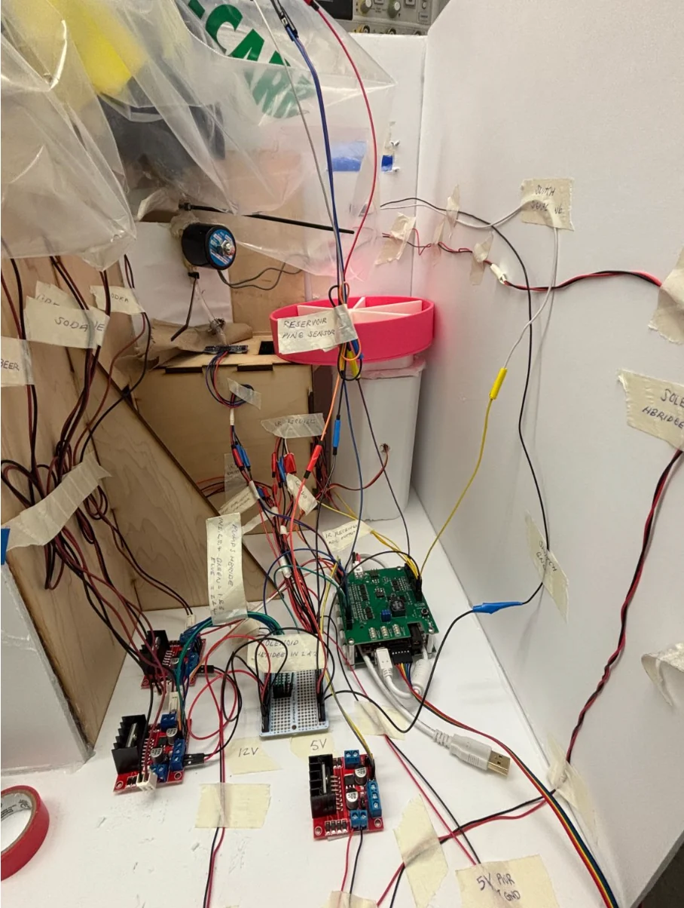

Overview
Designed and built an autonomous bartender robot that selects, mixes and dispenses beverages using fluid actuators, electronic controls, sensors and embedded firmware. The work involved integrating mechanical and electrical subsystems into a working demonstration.
My work
Mechatronics, fluid dispensing hardware, embedded control, sensors, CAD and integration.
Project focus
Our team delivered a functioning interactive system and iterated on the dispensing and control hardware.
Project photos

